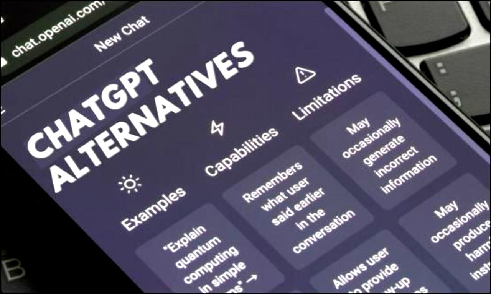
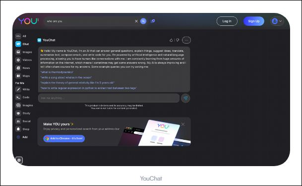

Top 5 ChatGPT Alternatives For Bloggers in 2023
As AI technology continues to advance, ChatGPT remains a well-liked choice for conversational systems. But there are other alternatives worth exploring. In this article, we'll uncover the top 5 ChatGPT rivals for 2023, including Replika, Jasper Chat, DialoGPT, YouChat, and Writesonic. These AI tools offer specific advantages and are great options for anyone looking to enhance their conversational systems. Let's dive into the top 5 ChatGPT alternatives of 2023.
Table of Content
- Top 5 ChatGPT Alternatives For Bloggers in 2023
- Which Is The Best ChatGPT Alternative For Content Creators?
Which Programming Languages Were Used In ChatGPT AI?
Learn More: Click Here→
1. ChatSonic
ChatSonic by Writesonic is a cutting-edge large-scale language model for generating multi-turn conversation responses. It outperforms other models, such as ChatGPT, by integrating with Google for real-time information on current topics
It embodies the intelligence of a wise person, the interpersonal skills of a counselor, the humor of a comedic performer, the analytical power of a data analyst, and the artistic flair of a creative writer. It is tireless, retains information, and never causes embarrassing pauses.
ChatSonic combines the knowledge of a professor, the friendliness of a best friend, the creativity of a brainstorming partner, and the attention to detail of a barista. It attentively listens and provides relevant suggestions for discussion. Whether you need help expressing your thoughts or generating captivating narratives and projects, ChatSonic is up to the task.
The cutting-edge AI chatbot developed by Writesonic, offers real-time data, image, and voice search capabilities. It efficiently generates content, from Facebook ad copy to extensive articles and blogs, based on user input. Additionally, its training in conversational response makes it an effective tool for customer service.
Cool Features Of ChatSonic AI
- Extracts Information From Google in RealTime.
- Possesses Conversational AI Avatars.
- Generates Graphics, Images.
- Allows To Edit, Share & Download The Conversations.
- Recognizes Voice Commands & Responds Accordingly.
- Reads Responses like Siri & Google Assistant.
Pros of ChatSonic Over ChatGPT
ChatSonic integrates with Google to provide real-time information on current topics whereas current version of ChatGPT-3 is far apart from it.
It has the ability to quickly generate content, from social media ad copy to long-form articles and blogs based on user input.
Trained to provide conversational answers, making it a better tool for customer service operations compared to ChatGPT.
ChatSonic is built for multi-turn conversations, making it more suitable for more complex conversational scenarios compared to ChatGPT.
It's integration with Google provides an added advantage over ChatGPT in terms of access to current informations and datas.
ChatGPT and Copyright: What You Need To Know
Learn More: Click Here→
2. YouChat
YouChat, developed by You[dot]com, is a conversational AI model designed to mimic human interactions. Like ChatGPT, it offers generic chatbot functionality.
It is a computer program that converstes like a person. It can help with different things like answering questions, translating languages, making short versions of texts, giving ideas, writing code and writing emails. But because it is still being improved, its answers may not be the best.
Cool Features Of YouChat AI
- YouChat can be used for Free at the moment.
- It can answer general questions like humans do.
- It claims to provide the latest informations available.
- Uses artificial intelligence and natural languages.
3. Jasper Chat
Jasper Chat is a powerful AI writing tool, often seen as a rival to ChatGPT. Formerly named Jarvis, it's one of the widely used AI writing software alongside Writesonic. Ideal for businesses seeking efficient content creation.
Jasper Chat, by Jasper, is a new, efficient content creation tool using advanced technology. It produces improved results. The recently introduced Jasper Chat is designed specifically for business purposes such as sales and marketing, streamlining the content creation process and making it faster and easier. With its fine-tuned technology, it can help companies produce high-quality content in a timely manner, increasing productivity and reducing workloads for sales and marketing departments
Cool Features Of Jasper Chat AI
- Easy and simple user interface.
- Supports paid service at $49/month.
- Especially designed for sales and marketing departments.
- Used by businesses for content creation needs.
How To Use ChatGPT AI For Beginners?
Learn More: Click Here→
4. Replika
Replika is an AI companion with advanced features, boasting over 10 million users. It excels in recognizing visual elements to sustain engaging conversations, making it a leading alternative to ChatGPT.
It is an AI-based chatbot that acts as a virtual friend, responding promptly to your messages. It can discuss a range of topics, including life, romance, and more, just like you would with a close pal or family member. It chatters like a buddy, answering promptly on various topics, such as life and love. What sets Replika apart is its ability to recognize images and use them to keep the conversation going, making it a unique chatbot option.
Cool Features Of Replika AI
- Recognizes and uses images in conversation.
- Learns and adapts to the user's personality.
- Keeps data secure through encryption.
- Offers both paid and free services.
5. DialoGPT

Microsoft's DialoGPT is a cutting-edge conversational AI technology built for multi-turn dialogue scenarios. It has been pre-trained on a large-scale corpus to generate highly sophisticated and context-aware responses. DialoGPT's advanced capabilities make it a top choice for conversational AI applications and a strong contender to existing models like ChatGPT. Learn More→
Cool Features Of DialoGPT AI
- Generates Highly Sophisticated Results.
- Uses advanced NLP techniques such as attention mechanisms and transformer models to generate human-like responses.
- DialoGPT is integrated with Microsoft Azure, making it easy to deploy and use in cloud-based applications.
- Generates Responses on a wide variety of topics.
Which Is The Best ChatGPT Alternative For Content Creators?
For content creators, Jasper Chat offers a standout solution among the listed chatbots. It's a platform that empowers businesses to build and integrate conversational interfaces into their websites and applications, allowing content creators to connect with their audience in a more interactive and personalized way by creating chatbots for their sites
Other chatbots such as DialoGPT or Replika also offer unique benefits for content creators, depending on their individual objectives and needs. Replika, for instance, can serve as a source of inspiration and language support for content creators, while DialoGPT can assist with writing and content generation. Ultimately, the most suitable chatbot for content creators will vary based on their specific requirements and goals.
Who Owns Content Generated By ChatGPT AI?
Learn More: Click Here→